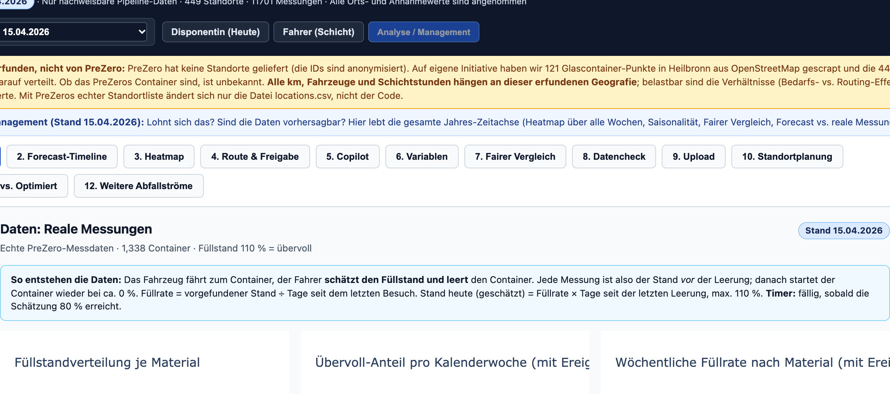
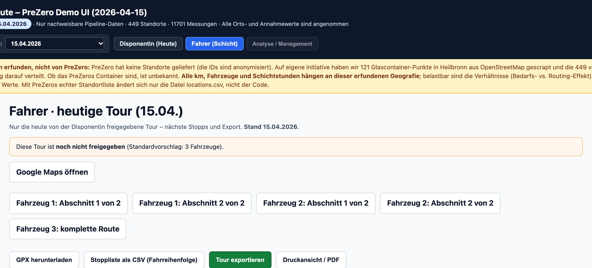
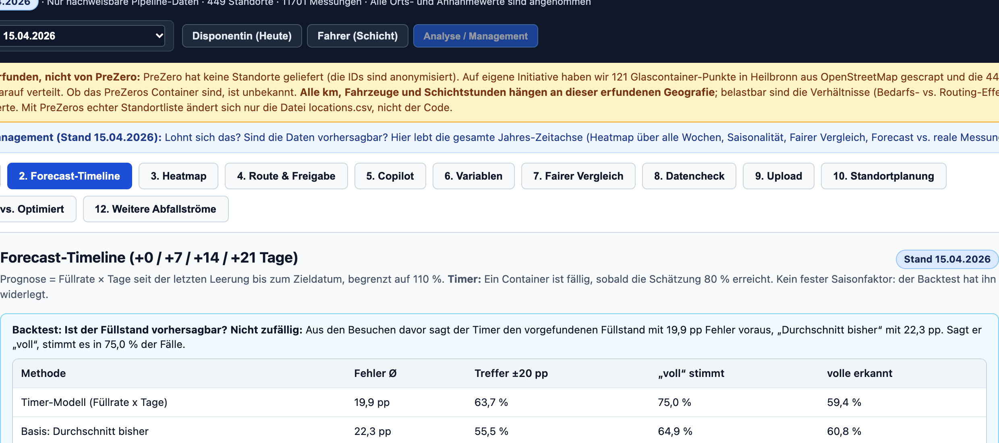
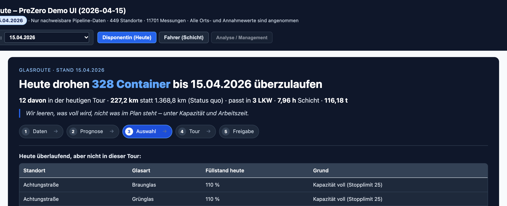
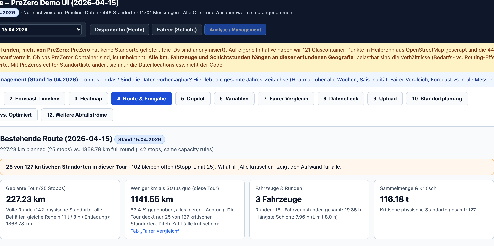
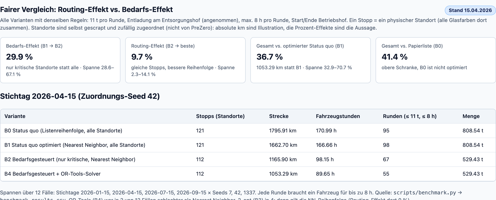
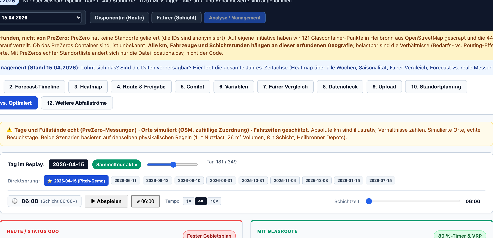
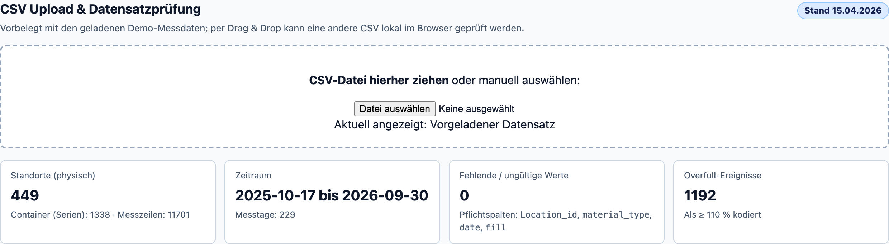
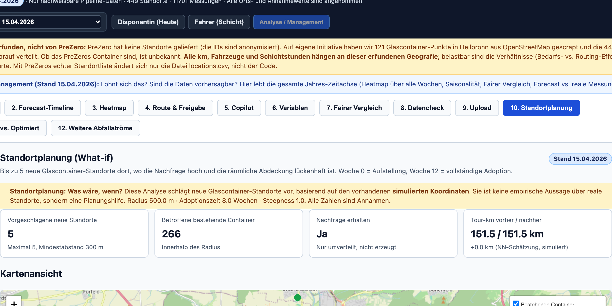
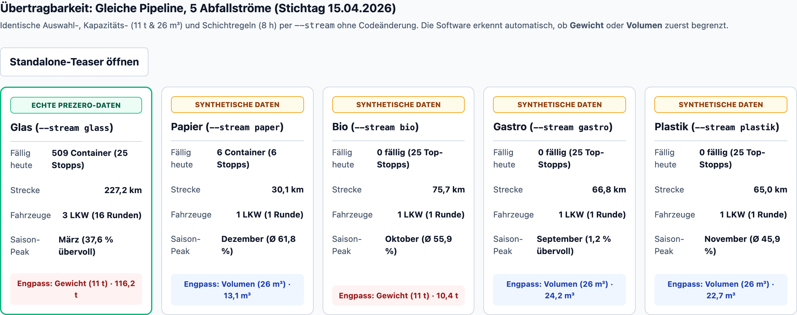

Es gibt keine teuren IoT-Ultraschallsensoren in den 449 Containern. Die Datenerfassung erfolgt im täglichen Arbeitsablauf des Fahrpersonals:

| Glasfarbe | Ideal bis 80 % | Ist-Turnus | Zu oft | Zu selten |
|---|---|---|---|---|
| 🟤 Braunglas | 95,4 Tage | 42,0 Tage | 89,1 % | 2,0 % |
| 🟢 Grünglas | 42,0 Tage | 34,0 Tage | 45,1 % | 7,0 % |
| ⚪ Weißglas | 32,5 Tage | 33,0 Tage | 12,0 % | 15,8 % |

Kein LKW fährt autonom. Der Algorithmus liefert den Vorschlag, die Disponentin gibt frei. Revisionssicher im JSON-Audit-Log protokolliert.

Aus den Daten: die Füllrate jedes einzelnen Containers (449 Stück).
Frei gesetzt: 80-%-Schwelle, 110-%-Kappung (overfull). Bewusst gestrichen: fester Saisonfaktor (Backtest: −17 pp Verzerrung).
| Besuch | Fahrer fand | Tage seit Leerung | Rate |
|---|---|---|---|
| 08.12.2025 | 10 % | 45 | 0,22 %/Tag |
| 19.12.2025 | 20 % | 11 | 1,82 %/Tag |
| 03.01.2026 | 20 % | 15 | 1,33 %/Tag |
| 26.01.2026 | 40 % | 23 | 1,74 %/Tag |
| 07.02.2026 | 10 % | 12 | 0,83 %/Tag |
| Mittelwert r̄ | 1,19 %/Tag | ||
Dichte 400 kg/m³ · Behälter 2,5 m³ · 11 t / 26 m³ · Umweg 1,35 · 25 km/h · Schicht 8 h · 2 + 3 + 20 min · Schwelle 80 % · Stopp-Limit 25. Betriebswerte in prezero_config.json, ohne Codeänderung austauschbar.
1. Auswahl: 509 Container fällig ≥ 80 %.
2. Tour: 25 Standorte in 3 LKW und 7,96 h gepackt.
3. Freigabe: Disponentin gibt digitale Tourliste frei.

| Stufe | Strategie | Stopps | Strecke | Runden | Delta vs. B1 |
|---|---|---|---|---|---|
| B0 | Status quo (Papier) | 121 | 1.795,91 km | 95 | Baseline |
| B1 | Status quo opt. (TSP) | 121 | 1.662,70 km | 98 | Referenz |
| B2 | Bedarf ≥ 80 % | 112 | 1.165,90 km | 67 | −29,9 % |
| B4 | Bedarf + OR-Tools | 112 | 1.053,29 km | 55 | −36,7 % |

| Modellierung | Tage | Leerungs-Füllstand | Überläufe |
|---|---|---|---|
| Status quo | 345 d | 66,0 % (Streuung 31 pp) | 1.192 |
| Naiv (60 % / 346 d) | 628 d | ~72 % | Kostenexplosion |
| LÖSUNG GlasRoute | 381 d | 83,5 % (Streuung 4 pp) | 0 (−100 %) |
„Wir leeren viel gleichmäßiger bei ~83 % statt zwischen leer und übervoll (Streuung 4 statt 31 pp, 0 Überläufe).
Der Haken: Wir sehen nicht mehr, wie sich halbvolle Container verhalten.
Lösung: Regelmäßige Zufallskontrollen zur Modellkalibrierung.“

11.701 echte Messungen aus Heilbronn. Wir erfinden keine synthetischen Sensordaten oder Phantasie-Profile.
449 echte OpenStreetMap-Containerpunkte in Heilbronn. Da PreZero IDs anonymisiert hat, ist die Zuordnung simuliert (`simulated_mapping`).
PreZero legt die Datei `locations_real.csv` ab. Das System rechnet sofort auf den echten Koordinaten — ohne Codeänderung.

Unser What-If-Modul simuliert neue Standorte über ein mathematisches Grid-Scoring:

Wir brauchen von PreZero nur: 1. Echte Standort-Zuordnung · 2. Reale LKW-Daten · 3. Betriebshof
